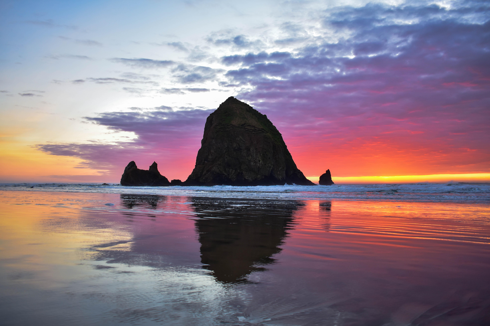
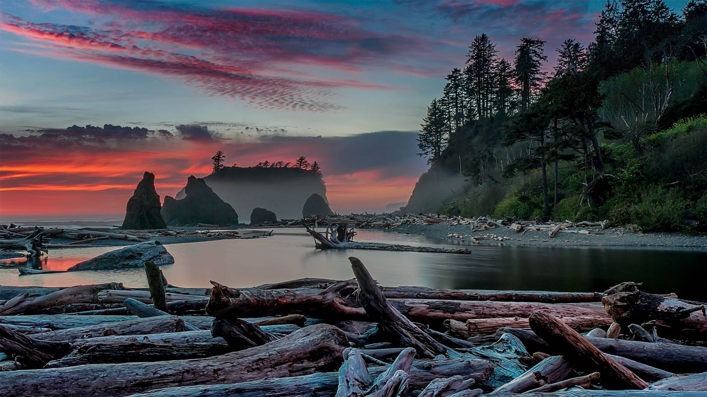
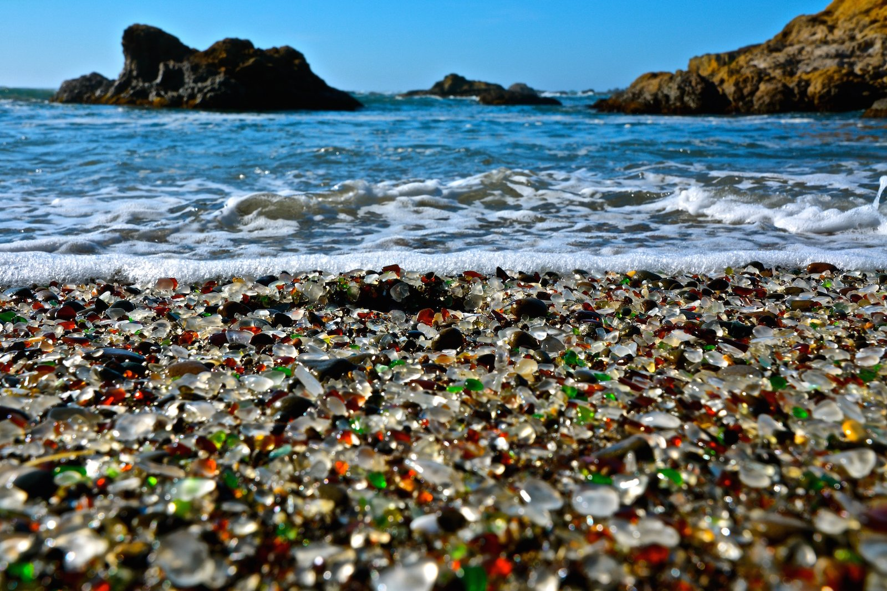

Cannon Beach
Famous for Haystack Rock, this Oregon beach is a must-see with stunning views, tide pools, and vibrant sunsets.

Ruby Beach
Known for its dramatic sea stacks and driftwood-covered shores, Ruby Beach offers breathtaking coastal scenery.

Glass Beach
Once a dumpsite, Glass Beach is now a unique treasure trove of colorful sea glass polished by the ocean.